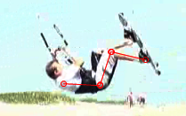
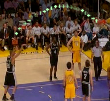
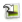

Manipuler les Images Clés
Une Image Clé est une image à laquelle vous accordez une importance
particulière. Cela peut-être une image de référence que vous allez
enrichir de commentaires, une position technique à mettre en évidence à
l'aide de dessins, un moment clé dans l'enchaînement, etc...
Ce pas-à-pas vous guide dans les opérations suivantes :
Ajouter des images clés, Ajouter des Commentaires,
Ajouter des Dessins, Sauvegarder et Importer des données des Images Clés.
La manipulation des Images Clés se fait à l'aide de la barre d'outil dédiée, qui est située directement sous l'image:
1. Ajouter des images clés
Déplacez vous à la position souhaitée dans la vidéo, et cliquez sur le bouton :  .
.
La barre d'outils des Images Clés se déplie et une miniature de l'image en cours apparaît.
Il n'y a pas de limite au nombre d'images que vous pouvez transformer en Images Clés.
Pour retirer une image de la liste, utilisez son bouton de fermeture dans le coin supérieur droit de la miniature :  .
.
2. Ajouter des Commentaires
Lorsque la position de la vidéo est sur une Image Clé existante, celle-ci est mise en évidence par un contour bleu.
Utilisez le bouton :  , pour afficher la fenêtre de commentaires:
, pour afficher la fenêtre de commentaires:
Par défaut, la zone de titre contient le marqueur temporel de la position de l'image.
Modifiez le titre dans la première zone, et ajoutez un commentaire dans la seconde zone.
Vous pouvez déplacer et agrandir cette fenêtre de commentaire pour faciliter l'édition.
3. Ajouter des Dessins
Vous pouvez ajouter des indicateurs visuels pour mettre en évidence certains points de l'analyse ou effectuer des mesures.
Une
fois un tel dessin en place, vous pouvez le déplacer à l'aide de la
souris en le faisant glisser vers sa nouvelle destination.
Pour certains d'entre eux, vous pouvez en modifier l'aspect à l'aide des poignées circulaires. (Ligne et Angle)
: Rédaction d'un Label.
Pour éditer un label déjà en place, double cliquez sur celui-ci.
 : Dessin à main levée au Crayon.
: Dessin à main levée au Crayon.
 : Tracé de Ligne.
: Tracé de Ligne.

: Positionnement de Marqueur en Croix.

: Mesure d'Angle.
 : Importe tous les dessins de l'Image Clé précédente dans l'Image courante.
Pour supprimer un dessin, effectuez un clic droit puis choisissez "Effacer".
La couleur des dessins est déterminée par le profil couleur au moment où l'outil est utilisé.
Vous accédez au profil couleur par le bouton :  .
.
Vous pouvez modifier la couleur de chaque type de dessin indépendamment des autres.
Les dessins déjà créés ne changent pas de couleur, la modification concerne les prochains dessins que vous allez faire.
4. Sauvegarder et Importer des données des Images Clés
Vous pouvez enregistrer et charger des données d'Images Clés
(Commentaires et Dessins) indépendamment de la vidéo.
Ceci vous
permet par exemple de partager vos travaux avec un correspondant,
d'effectuer plusieurs analyses différentes sur la même vidéo, ou
d'importer un ensembles de dessins réalisés dans une vidéo
similaire.
Voyons comment réaliser ce scénario.
Après
avoir positionné plusieurs Images Clés et ajouté quelques dessins et
commentaires, vous aimeriez transférer ces dessins dans une autre vidéo.
Utilisez le menu Fichier > Enregistrez la Vidéo ou les Données des
Images Clés.
Choisissez l'option "Enregistrez uniquement les données des Images Clés".
Les données sont enregistrées dans un fichier à l'extension .kva (Vous pouvez l'ouvrir avec le Bloc Notes).
Il contient les informations nécessaires pour recréer la position des Images Clés, les Commentaires et les Dessins.
Ouvrez la seconde vidéo.
Chargez le fichier de Dessins et Commentaires en utilisant le menu Fichier > Chargez des Données d'Images Clés.
Choisissez le fichier (d'extension .kva) que vous avez précédemment sauvegardé.
Des
Images Clés sont automatiquement créées aux positions enregistrées et
les dessins et commentaires correspondants sont ajoutés.
Note concernant les Données des Images Clés:
Lorsque
vous ouvrez une vidéo dans Kinovea, une recherche est effectuée pour
détecter un fichier de même nom et d'extension .kva.
Si un tel fichier est trouvé, il sera automatiquement chargé dans la vidéo.
Si
vous ne souhaitez pas qu'un tel chargement automatique ait lieu,
sauvegardez le fichier .kva avec un nom différent du nom de fichier de
la vidéo.
Note concernant le partage de données entre plusieurs ordinateurs :
Dans
le cas du partage des données entre plusieurs ordinateurs, vous pouvez
utiliser cette technique et fournir à votre correspondant le fichier
vidéo accompagné du fichier .kva.
Votre correspondant pourra alors
réimporter les commentaires et dessins, ceux-ci restant totalement
dynamiques et modifiables.
Pour faciliter ce type d'échange, il
est également possible d'incorporer les données des Images Clés
directement dans le fichier vidéo (sans perdre la possibilité de
modification après coup).
Pour plus d'information sur ce mode d'enregistrement, reportez vous à l'article Sauvegarder des Séquences Vidéo.